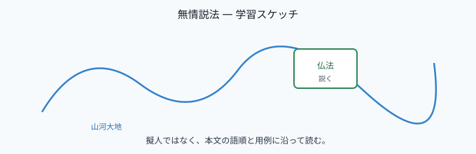

七十五巻 巻一覧
正法眼藏第四十六 無情説法
（ローカル生成の全文: 全文ページ）
なぜ優先するか（思想史・学習上の位置）
「無情説法」は、草木瓦礫の擬人化イメージに還元されやすい題材ですが、道元は説法と無情の性相を正面から組み替えます。大證國師の因縁、洞山・雲巖の問答、そして若將耳聽終難會、眼處聞聲へ至る一連は、後の「声色」論や正伝の是非とも響き合う、仏法の骨格が凝った巻です。
語彙の足場
- 無情説法：樹林の鳴條や開落だけを指すのではない、と道元は明言します（擬似自然宗教への警告）。
- 諸聖得聞：大證國師の「無情説法、諸聖得聞」との関連で、聞・説の現成が論じられます。
- 無情得聞：雲巖の「無情説法、無情得聞」— 洞山の再参究の核になります。
- 眼處聞聲：耳聽に擬する限り会得し難い、という反転の下での眼処の参究です。
本文（冒頭・抜粋）
抜粋は doc/正法眼蔵.txt に準拠します。原文の参照元:
https://shomonji.or.jp/zazen/doc/genzou.html
しかあればすなはち、諸佛の説法を使用するがごとく、諸佛は説法を使用するなり。諸佛の説法を正傳するがごとく、諸佛は説法を正傳するによりて、古佛より七佛に正傳し、七佛よりいまに正傳して無情説法あり。この無情説法に諸佛あり、諸祖あるなり。
（中略・國師と僧の問答）
常説熾然、説無間歇とあり。常は諸時の一分時なり。説無間歇は、説すでに現出するがごときは、さだめて無間歇なり。無情説法の儀、かならずしも有情のごとくにあらんずると參學すべからず。
愚人おもはくは、樹林の鳴條する、葉花の開落するを無情説法と認ずるは、學佛法の漢にあらず。
（中略・洞山・雲巖）
無情説法不思議。（也太奇、也太奇、無情説法不思議なり。若將耳聽は終難會なり、眼處に聞聲して方に知ることを得ん。）
図解（スケッチ SVG）

深掘り（教育的メモ）
- 「有情のごとく」に見立てない：擬人化で「草木が説く」と読むのではなく、説法の性相として無情を論じます。ここを飛ばすと、巻全体の推力が失われます。
- 「我説汝尚不聞」：雲巖の第二転は、単なる詰問ではなく、聞不聞の位を抉る行です。道元は嗣続・血脈の文脈で読み込みます。